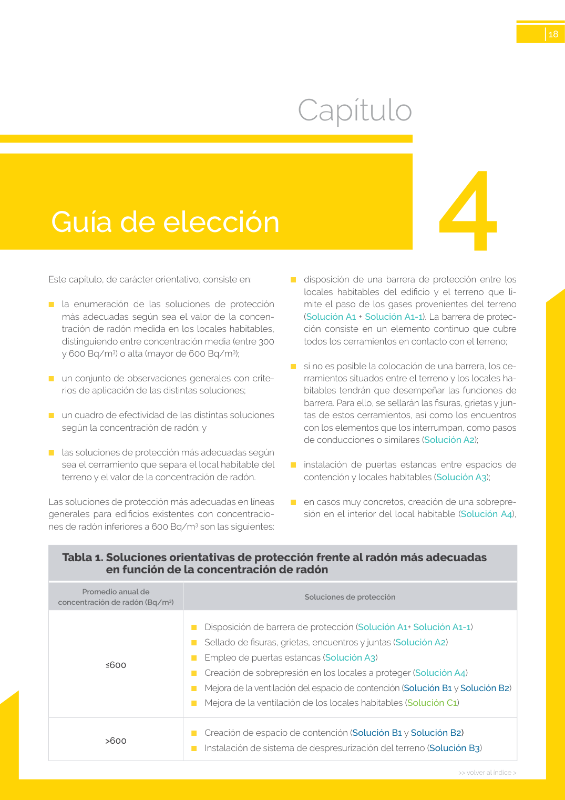

<!doctype html>
<html lang="es"><head><meta charset="utf-8">
<meta name="viewport" content="width=device-width, initial-scale=1">
<title>GUIA · Capítulo</title><link rel="stylesheet" href="../estilo.css">
</head><body>
<nav><a href="../index.html">Índice</a> › <a href="../doc/guia-pdf-23d2f2198c3b-sin-fecha-6765d0c34c51.html">GUIA</a> › a0053</nav>

<header class="meta">
<p><a href="../doc/guia-pdf-23d2f2198c3b-sin-fecha-6765d0c34c51.html">GUIA</a> · Capítulo · versión sin-fecha · capa guia</p>
</header>
<div class="cita"><strong>Cita:</strong> GUIA · ID técnico a0053 · Capítulo · páginas físicas pág. 18 (impresas: ['18'])</div>
<p>Formatos: <a href="../../contenido/docs/GUIA-PDF-23d2f2198c3b/sin-fecha__6765d0c34c51/apartado/a0053__capitulo.json">JSON compacto</a> · <a href="../../contenido/docs/GUIA-PDF-23d2f2198c3b/sin-fecha__6765d0c34c51/apartado/a0053__capitulo.md">Markdown</a> · <a href="../../contenido/docs/GUIA-PDF-23d2f2198c3b/sin-fecha__6765d0c34c51/fuente.pdf">PDF fuente</a></p>
<p><a href="../doc/guia-pdf-23d2f2198c3b-sin-fecha-6765d0c34c51.html">Ámbito del documento</a> · <a href="../doc/guia-pdf-23d2f2198c3b-sin-fecha-6765d0c34c51.html#ambito">texto del ámbito</a> ·
<a href="../doc/guia-pdf-23d2f2198c3b-sin-fecha-6765d0c34c51.html">documento y tablas</a></p>
<nav><a href="guia-pdf-23d2f2198c3b-sin-fecha-6765d0c34c51__a0052.html">← Soluciones de reducción del radón tras penetrar en los locales a proteger</a> <a href="guia-pdf-23d2f2198c3b-sin-fecha-6765d0c34c51__a0054.html">Guía de elección →</a></nav>
<h1>Capítulo</h1>
<p>Tipo: formulas, tablas, figuras · nivel 1 · sección estimada: Capítulo · padre: </p>
<pre class="literal">Capítulo
4
&gt;&gt; volver al índice &gt;
18
Este capítulo, de carácter orientativo, consiste en:
■
la enumeración de las soluciones de protección
más adecuadas según sea el valor de la concen­
tración de radón medida en los locales habitables,
distinguiendo entre concentración media (entre 300
y 600 Bq/m3) o alta (mayor de 600 Bq/m3);
■
un conjunto de observaciones generales con crite­
rios de aplicación de las distintas soluciones;
■
un cuadro de efectividad de las distintas soluciones
según la concentración de radón; y
■
las soluciones de protección más adecuadas según
sea el cerramiento que separa el local habitable del
terreno y el valor de la concentración de radón.
Las soluciones de protección más adecuadas en líneas
generales para edificios existentes con concentracio­
nes de radón inferiores a 600 Bq/m3 son las siguientes:
■
disposición de una barrera de protección entre los
locales habitables del edificio y el terreno que li­
mite el paso de los gases provenientes del terreno
(Solución A1 + Solución A1-1). La barrera de protec­
ción consiste en un elemento continuo que cubre
todos los cerramientos en contacto con el terreno;
■
si no es posible la colocación de una barrera, los ce­
rramientos situados entre el terreno y los locales ha­
bitables tendrán que desempeñar las funciones de
barrera. Para ello, se sellarán las fisuras, grietas y jun­
tas de estos cerramientos, así como los encuentros
con los elementos que los interrumpan, como pasos
de conducciones o similares (Solución A2);
■
instalación de puertas estancas entre espacios de
contención y locales habitables (Solución A3);
■
en casos muy concretos, creación de una sobrepre­
sión en el interior del local habitable (Solución A4),
Tabla 1. Soluciones orientativas de protección frente al radón más adecuadas
en función de la concentración de radón
Promedio anual de
concentración de radón (Bq/m3)
Soluciones de protección
≤600
■
Disposición de barrera de protección (Solución A1+ Solución A1-1)
■
Sellado de fisuras, grietas, encuentros y juntas (Solución A2)
■
Empleo de puertas estancas (Solución A3)
■
Creación de sobrepresión en los locales a proteger (Solución A4)
■
Mejora de la ventilación del espacio de contención (Solución B1 y Solución B2)
■
Mejora de la ventilación de los locales habitables (Solución C1)
&gt;600
■
Creación de espacio de contención (Solución B1 y Solución B2)
■
Instalación de sistema de despresurización del terreno (Solución B3)</pre>
<h2>Tablas en estas páginas</h2><ul><li>p. 18 · <a href="../../contenido/docs/GUIA-PDF-23d2f2198c3b/sin-fecha__6765d0c34c51/tabla/p0018_t01.json">p0018_t01.json</a> · <a href="../../contenido/docs/GUIA-PDF-23d2f2198c3b/sin-fecha__6765d0c34c51/tabla/p0018_t01.csv">.csv</a></li><li>p. 18 · <a href="../../contenido/docs/GUIA-PDF-23d2f2198c3b/sin-fecha__6765d0c34c51/tabla/p0018_t02.json">p0018_t02.json</a> · <a href="../../contenido/docs/GUIA-PDF-23d2f2198c3b/sin-fecha__6765d0c34c51/tabla/p0018_t02.csv">.csv</a></li></ul><h2>Página visual</h2><figure><a href="../../contenido/docs/GUIA-PDF-23d2f2198c3b/sin-fecha__6765d0c34c51/figura/p0018.png"></a><figcaption>Página visual 18 (fuente para fórmulas/tablas/figuras)</figcaption></figure><p class="aviso">PDF fuente redistribuible: copia fiel enlazada en esta página (SHA256 verificado).</p>
<footer>Generado estáticamente desde JSON normalizado; sin JavaScript ni servicios externos.
El JSON es la fuente; este HTML es caché reproducible.</footer>
</body></html>
